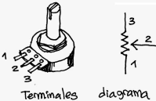
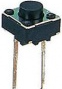

Qué vamos a aprender

- Cómo ingresar información a PonchoBot a través de un pulsador y un potenciómetro.
- Un poco de electrónica -la conexión de una resistencia pull up- para que el pulsador funcione bien.
- La programación del sprite/personaje por defecto -el osito Tobi- para que "agrande su corazón".
¡¡Manos a la obra!!